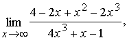
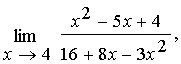
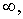
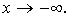
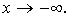

ЗАНЯТИЕ 4.2. ПРЕДЕЛ ПОСЛЕДОВАТЕЛЬНОСТИ,
ПРЕДЕЛ ФУНКЦИИ. РАСКРЫТИЕ НЕОПРЕДЕЛЕННОСТЕЙ
Контрольные вопросы
- Что называется пределом последовательности?
- Что называется пределом функции в точке, на бесконечности?
- Перечислите основные и не основные неопределенности
Задачи
- Доказать, что последовательность
имеет предел А= - 4.
- Доказать, что функция имеет предел А= 9
при .
- Найти пределы:
а) б) 
в) г)
д) е)
ж) з)
и) к) 
л) м)
н)  п)
р) с)
Ответы
-
- а) б)
в) г) 0,
д) -1, е) - 4,
ж) 1, з)
и) , к) 1,
л) 3, м) ,
н) , п) - 60, р) - 2,
с) при  при 
при 
-